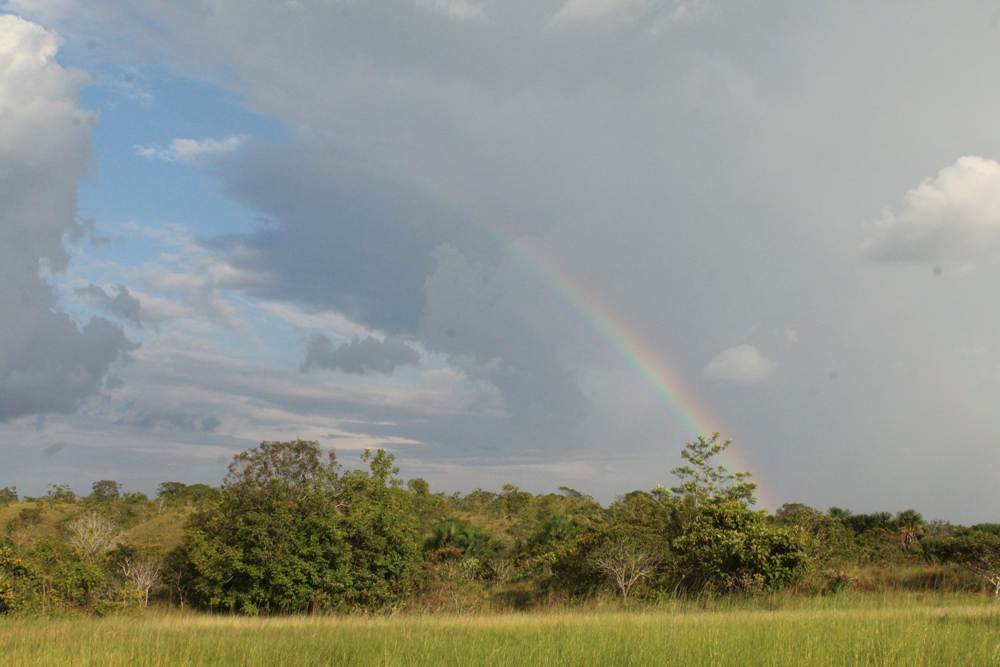

Proyecto de campo P-04
Guardianas de la orilla
Variación morfológica, sexual y ecológica de Lycosidae como herramienta de apoyo a la gestión del recurso hídrico en la RNSC Yurumí, Puerto López, Meta
- Lugar
- RNSC Yurumí, Puerto López (Meta)
- Ecosistema
- Bosque de galería
- Video
- Disponible
- Nota científica
- Pendiente

Resumen
El resumen del proyecto se agregará cuando el equipo lo envíe.
Materiales del proyecto
Una ficha del ecosistema, dos fichas de especies y la nota científica con los resultados.

Ficha de ecosistema
El paraíso al final del arcoíris
Bosque de galería
Ver ficha →Ficha de especie
El peso de una nueva generación
Araña lobo · Lycosidae
Ver ficha →Ficha de especie
Pendiente
Aún no está en la carpeta
Nota científica
Pendiente
Aún no está en la carpeta
Créditos Grupo de gestión ambiental, ecosistemas terrestres y biología tropical · 2026-2